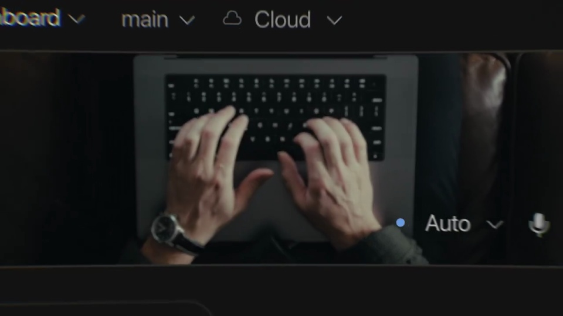
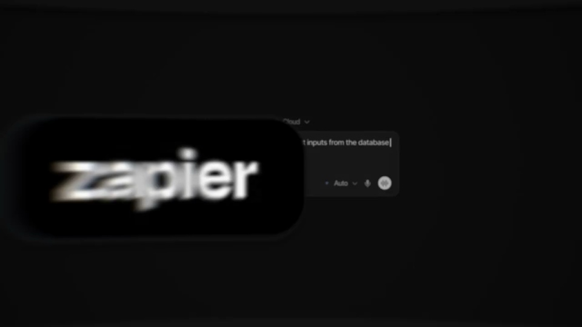

Framer / V152
Framer 接入 Cursor
从键盘近景过渡到暗色输入框，输入完成后切到 CMS 表格。让蓝框顺着行列表出现，说明一条请求影响多条数据。
构图与编排 可播放 · 可替换内容
整体编排规则示例
查看 HTML 源码
<!doctype html><html lang="zh-CN"><meta charset="utf-8"><meta name="viewport" content="width=device-width,initial-scale=1"><title>Framer 接入 Cursor · sequence</title><style>html,body{margin:0;width:100%;height:100%;overflow:hidden;background:#080808}canvas{display:block;width:100%;height:100%;object-fit:contain}</style><body data-mode="sequence"><canvas width="1000" height="600"></canvas><script src="data.js"></script><script src="common.js"></script><script src="scene.js"></script><script src="bridge.js"></script></body></html>画面元素任务输入框CMS 行列表蓝色选择边框结论标题双品牌标志
MOTION LANGUAGE
动作与构图
局部动作 · 构图规则
01
把一次输入接到一批结果
把一次输入接到一批结果规则示例
查看 HTML 源码
<!doctype html><html lang="zh-CN"><meta charset="utf-8"><meta name="viewport" content="width=device-width,initial-scale=1"><title>Framer 接入 Cursor · sequence</title><style>html,body{margin:0;width:100%;height:100%;overflow:hidden;background:#080808}canvas{display:block;width:100%;height:100%;object-fit:contain}</style><body data-mode="clip" data-start="5.5" data-end="8.8"><canvas width="1000" height="600"></canvas><script src="data.js"></script><script src="common.js"></script><script src="scene.js"></script><script src="bridge.js"></script></body></html>从键盘近景过渡到暗色输入框，输入完成后切到 CMS 表格。让蓝框顺着行列表出现，说明一条请求影响多条数据。
02
用缩放衔接三个信息尺度
输入特写、表格全貌和发布标题使用不同景别；数据视图缩小退出后，白字标题从超大画幅回到中央。黑底和蓝色细边保持一致。
03
最后只留下接入关系
结论写成两行短句，留读后收为两个等视觉重量的标志，中间用乘号。替换品牌时保留“输入—结果—接入公告”的因果链。
SEQUENCE
段落与节奏
点击段落，定位到上方编排示意。


画面参考 · 离散静帧
KEEP THE RELATIONSHIPS
制作其他主题
- 替换任务、数据列和双品牌，保留单次输入引发批量结果。
制作约束
任务输入框 / CMS 行列表 / 蓝色选择边框 / 结论标题 / 双品牌标志
- 从键盘近景过渡到暗色输入框，输入完成后切到 CMS 表格。让蓝框顺着行列表出现，说明一条请求影响多条数据。
- 输入特写、表格全貌和发布标题使用不同景别；数据视图缩小退出后，白字标题从超大画幅回到中央。黑底和蓝色细边保持一致。
- 结论写成两行短句，留读后收为两个等视觉重量的标志，中间用乘号。替换品牌时保留“输入—结果—接入公告”的因果链。